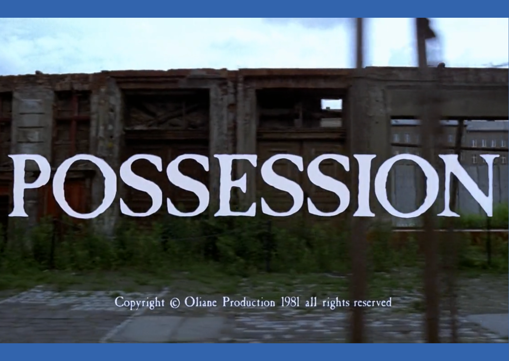

About Me
My name is Czarina Patrice Roque and I like movies. I like movies that make me itch, disgust, wail, vomit, contemplate, etc. For me, a good movie can make the audience FEEL while watching. A good example of a film that made me feel all lot of emotions all at once is the movie Possession (1981). This movie alone made me feel all sorts of things that changed the way I thought about particular topics like marriage and divorce.
Links: